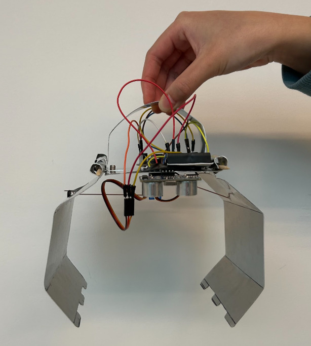

Arduino Claw Project
APSC 101 · 2026
Built and programmed an Arduino-controlled claw system using electrical components, wiring, and microcontroller logic. The goal was to control a physical mechanism through programmed input/output behavior and make the system respond reliably during testing.
My main role was connecting the Arduino to different components, organizing the wiring, debugging input/output behavior, and adjusting the code so the mechanism behaved the way it was intended to. This project made the connection between software logic and physical electrical behavior much more clear to me.
The most interesting part was troubleshooting. A small wiring issue, weak connection, or logic mistake could change the entire system response. Testing the claw forced me to slow down, isolate problems, and verify each part of the system step by step.
LINK: Add project photos, demo video, or GitHub link here